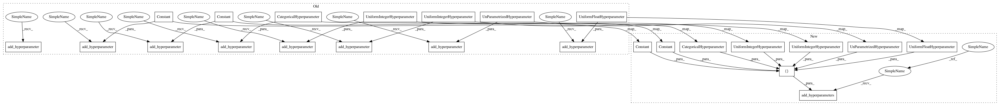

8565a366de87d82dc19c3386b4a83359be1aa275,autosklearn/pipeline/components/classification/decision_tree.py,DecisionTree,get_hyperparameter_search_space,#Any#,84
Before Change
def get_hyperparameter_search_space(dataset_properties=None):
cs = ConfigurationSpace()
criterion = cs.add_hyperparameter(CategoricalHyperparameter(
"criterion", ["gini", "entropy"], default="gini"))
splitter = cs.add_hyperparameter(Constant("splitter", "best"))
max_features = cs.add_hyperparameter(Constant("max_features", 1.0))
max_depth = cs.add_hyperparameter(UniformFloatHyperparameter(
"max_depth", 0., 2., default=0.5))
min_samples_split = cs.add_hyperparameter(UniformIntegerHyperparameter(
"min_samples_split", 2, 20, default=2))
min_samples_leaf = cs.add_hyperparameter(UniformIntegerHyperparameter(
"min_samples_leaf", 1, 20, default=1))
min_weight_fraction_leaf = cs.add_hyperparameter(
Constant("min_weight_fraction_leaf", 0.0))
max_leaf_nodes = cs.add_hyperparameter(
UnParametrizedHyperparameter("max_leaf_nodes", "None"))
return cs
After Change
@staticmethod
def get_hyperparameter_search_space(dataset_properties=None):
cs = ConfigurationSpace()
criterion = CategoricalHyperparameter(
"criterion", ["gini", "entropy"], default="gini")
splitter = Constant("splitter", "best")
max_features = Constant("max_features", 1.0)
max_depth = UniformFloatHyperparameter(
"max_depth", 0., 2., default=0.5)
min_samples_split = UniformIntegerHyperparameter(
"min_samples_split", 2, 20, default=2)
min_samples_leaf = UniformIntegerHyperparameter(
"min_samples_leaf", 1, 20, default=1)
min_weight_fraction_leaf = Constant("min_weight_fraction_leaf", 0.0)
max_leaf_nodes = UnParametrizedHyperparameter("max_leaf_nodes", "None")
cs.add_hyperparameters([criterion, splitter, max_features, max_depth,
min_samples_split, min_samples_leaf,
min_weight_fraction_leaf, max_leaf_nodes])
return cs
In pattern: SUPERPATTERN
Frequency: 5
Non-data size: 24
Instances
Project Name: automl/auto-sklearn
Commit Name: 8565a366de87d82dc19c3386b4a83359be1aa275
Time: 2017-02-04
Author: feurerm@informatik.uni-freiburg.de
File Name: autosklearn/pipeline/components/classification/decision_tree.py
Class Name: DecisionTree
Method Name: get_hyperparameter_search_space
Project Name: automl/auto-sklearn
Commit Name: 8565a366de87d82dc19c3386b4a83359be1aa275
Time: 2017-02-04
Author: feurerm@informatik.uni-freiburg.de
File Name: autosklearn/pipeline/components/regression/random_forest.py
Class Name: RandomForest
Method Name: get_hyperparameter_search_space
Project Name: automl/auto-sklearn
Commit Name: 8565a366de87d82dc19c3386b4a83359be1aa275
Time: 2017-02-04
Author: feurerm@informatik.uni-freiburg.de
File Name: autosklearn/pipeline/components/feature_preprocessing/extra_trees_preproc_for_classification.py
Class Name: ExtraTreesPreprocessorClassification
Method Name: get_hyperparameter_search_space
Project Name: automl/auto-sklearn
Commit Name: 8565a366de87d82dc19c3386b4a83359be1aa275
Time: 2017-02-04
Author: feurerm@informatik.uni-freiburg.de
File Name: autosklearn/pipeline/components/classification/decision_tree.py
Class Name: DecisionTree
Method Name: get_hyperparameter_search_space
Project Name: automl/auto-sklearn
Commit Name: 8565a366de87d82dc19c3386b4a83359be1aa275
Time: 2017-02-04
Author: feurerm@informatik.uni-freiburg.de
File Name: autosklearn/pipeline/components/feature_preprocessing/extra_trees_preproc_for_regression.py
Class Name: ExtraTreesPreprocessorRegression
Method Name: get_hyperparameter_search_space
Project Name: automl/auto-sklearn
Commit Name: 8565a366de87d82dc19c3386b4a83359be1aa275
Time: 2017-02-04
Author: feurerm@informatik.uni-freiburg.de
File Name: autosklearn/pipeline/components/classification/extra_trees.py
Class Name: ExtraTreesClassifier
Method Name: get_hyperparameter_search_space